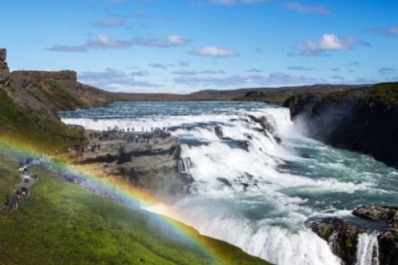
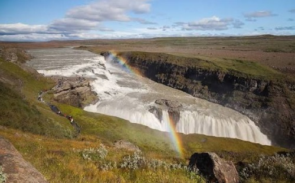
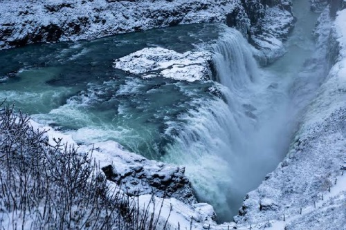
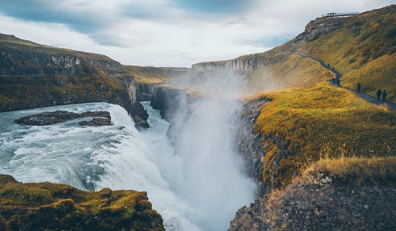
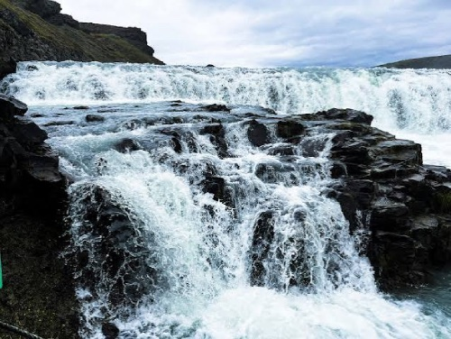

Gullfoss
Gullfoss er einn þekktasti og vinsælasti foss Íslands. Hann er staðsettur í Hvítá á Suðurlandi og er einn af þekktum áfangastöðum Gullna hringsins.

Um Gullfoss
Gullfoss er einn frægasti og vinsælasti foss Íslands. Hann er staðsettur í Hvítá á Suðurlandi og er hluti af Gullna hringnum. Fossinn skiptist í tvö þrep og vatnið fellur niður í djúpt gljúfur. Þessi foss er líka mjög vinsæll þegar ferðamenn eða útlendingar koma til Íslands á hverju ári milli sumarsins,vorið og haustsins.



